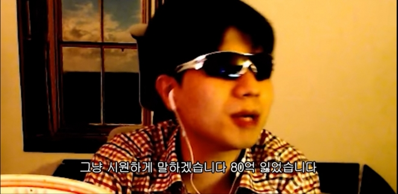

HTML
hello world
아이고 이게 머선129
레전드 레전드 레전드
이길 수 있다면 구두 밑창이라도 핥겠다.
안심하세요. 도둑입니다. 별거 아니에요!
Thief Simulator 플레이 중 도둑질을 하러 들어간 집의 주인이 자신을 보고 소리 지르자 한 말
지랄하고 있네. 뭔 우한 폐렴이 아니라 코로나바이러스19라고 부르죠야. 내 방에서 코로나바이러스 이렇게 부르는 사람을 내가 철퇴를 내려야겠네? 내 방에선 우한 폐렴이다! 불만 없제?
그러니까 내가 누군가를 이제 좋아한다는 사실이 그 사람에게는 상처가 될 수도 있잖아요...
당시 IZ*ONE 멤버 중 자신의 최애를 밝히려다 망설이며 한 말
시발련아 여자는 안 때릴 줄 알았어?
잔나를 잡으면서.
어질어질하다...
서운하네,,,,
일 왜 함? 방송 왜 함?
파멸적인 코인 상승 그래프를 창에 띄우며, 이후 3억을 잃고 잠적한다.
